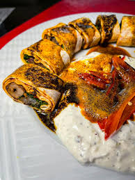
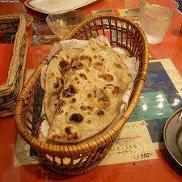
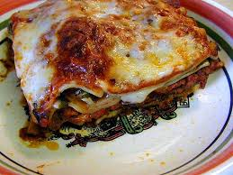

A Rolexis a popular street food from Uganda. The name comes from "rolled eggs" and not the luxury watch
It's essentially a chapati rolled around a seasoned egg and vegetable filling, similar to a burrito or wrap
1/4 small onions
1 small totmato
1/4 small carrot
1/4 cup cabbage
1/2 small bell pepper optional
Salt
Black pepper
1 Maggi cube
Fresh green onoions
Cheese
Avocado
Chop onions, tomatos, cabbages,and carrot
Crack 2 eggs into a bowl, add salt, pepper, and crushed Maggi cubes this is optional and then whisk
Heat 1 table spoon of oil in a pan, Saute onions and veggies for 1 minute. Pour in eggs and scramble until fully cooked
Heat chapati in a dry pan for 10-15 seconds per side
Lay chapati flat. Spoon egg filling in a line down the center
Fold one side over filling, tuck slightly, then roll tightly like a burrito
Wrap in foil or paper to hold shape. Ear hot

A Chapati is an unleavened flatbread originating from the Indian subcontinent. It's typically round and flat, about 6-8 inches in diameter, with a warm, golden-brown surface marked by darker toasted spots from cooking. The texture is soft and paliable, often with a slight chew, and it can be pulled apart into thin layers when freshly made. It's flavor is mild, nutty, and slightly earthy, made simply from whole flour, water, and salt. Chapatis are commonly cooked on a dry tava or griddle and then briefly puffed over an open flame, giving them a lightly charred, smoky aroma. Served hot, they are used to scoop up curries, vegetables, or lentils, acting as both a utensil and a satisfying, wholesome staple
The primary ingredient, giving chapatis its characteristic earthly, nutty flavor
To bind the flour into a soft, pliable dough
Added for taste though some regional variations may omit

Lasagna is a classic Italian casserole dish featuring alternating layers of wide, flat pasta sheets, savory sauces (typically ragù and béchamel), cheese (such as mozzarella, ricotta, or parmesan), and sometimes meat or vegetables. It is baked al forno (in the oven) until bubbly and golden, offering a rich, comforting, and hearty texture
Cook meat, onions, and garlic in olive oil until browned.Simmer: Stir in tomatoes, tomato paste, herbs, salt, and pepper.Thicken: Simmer on low heat for 20 minutes until thick
Mix ricotta, half the parmesan, and the egg in a bowl.Season: Add a pinch of salt and pepper, then stir until smooth.
Cook lasagna sheets in salted water per package instructions.Drain: Drain and lay sheets flat on parchment paper to prevent sticking.
Spread a thin layer of meat sauce in a baking dish.Build: Layer pasta sheets, ricotta mixture, meat sauce, and mozzarella.Repeat: Repeat these layers until all ingredients are used.Top: Finish with a final layer of pasta, remaining meat sauce, mozzarella, and parmesan.
Cover the dish loosely with foil.Bake: Bake at 190°C (375°F) for 25 minutes.Brown: Remove foil and bake 15 minutes more until bubbly.Rest: Let sit for 15 minutes before slicing so it holds its shape.